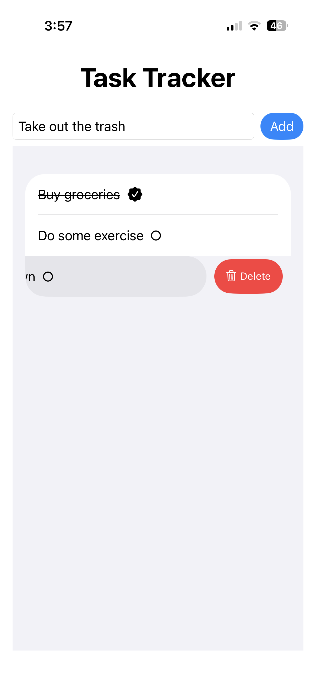

Computer Science Student @ University of Virginia
Computer science student at the University of Virginia with interests in software development, cybersecurity, cloud computing, and mobile application development.
Bachelor's in Computer Science Expected May 2027
Master's in Computer Science (UVAccelerate, accelerated program) Expected May 2028
AWS Certified Cloud Practitioner: View Badge

Native iPhone task management application built with Swift and Xcode. Users can create, delete, and track tasks while maintaining data across app launches through local persistence.
Tech: Swift, SwiftUI, SwiftData, Xcode
GitHub RepositoryBuilt a serverless Discord bot using Cloudflare Workers, Cloudflare D1, and Discord Interactions API. Supports persistent note management with full CRUD functionality and integrates weather.gov RESTful API to provide real-time weather information directly within Discord servers.
Tech: JavaScript, Cloudflare Workers, Cloudflare D1, SQL
GitHub RepositoryNetwork reconnaissance tool developed in Python that automates TCP port discovery and analyzes connection states on target hosts. Created as part of Intro to Cybersecurity coursework to explore socket programming and network analysis concepts.
Tech: Python, Socket Programming
Desktop application that allows students to submit, store, and browse course reviews through a graphical user interface. Built for Software Development Essentials course at UVA, utilizing JavaFX for the frontend and SQLite for data persistence.
Tech: Java, JavaFX, SQLite
Python, Java, C, SQL, JavaScript, Swift
Node.js, Cloudflare Workers, Cloudflare D1, AWS, RESTful APIs
Git, Ghidra, Wireshark, AI-powered code assistants (ChatGPT, Copilot, Gemini)
Xcode, VS Code, IntelliJ IDEA, PyCharm
Email: gyao721@gmail.com
GitHub: github.com/GogeUVA